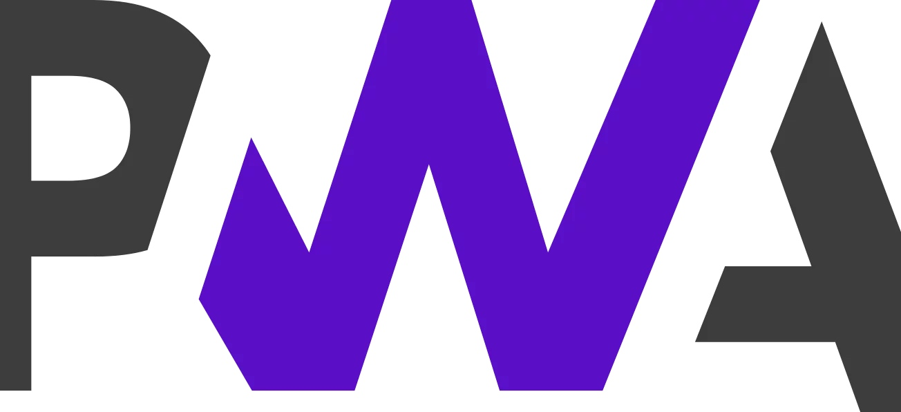

【PWA学习与实践】(1) 2018，开始你的PWA学习之旅

PWA作为今年最火热的技术概念之一，对提升Web应用的安全、性能和体验有着很大的意义，非常值得我们去了解与学习。
本系列文章《PWA学习与实践》会逐步拆解PWA背后的各项技术，通过实例代码来讲解这些技术的应用方式。也正是因为PWA中技术点众多、知识细碎，因此我在学习过程中，进行了整理，并产出了《PWA学习与实践》系列文章，希望能带大家全面了解PWA中的各项技术。对PWA感兴趣的朋友欢迎关注。
首先简单了解一下PWA。
1. 什么是PWA
PWA，即Progressive Web App, 是提升 Web App 的体验的一种新方法，能给用户原生应用的体验。
我们需要理解的是，PWA不是某一项技术，或者某一个新的产物；而是一系列Web技术与标准的集合与应用。通过应用这些新的技术与标准，可以从安全、性能和体验三个方面，优化我们的Web App。所以，其实PWA本质上依然是一个Web App。
因此，学习PWA其实就是了解与掌握这些PWA背后的技术。本系列文章会针对PWA中所涉及到的技术进行介绍，并配合代码实例来展示各类技术的使用方式。希望通过这一系列文章，让大家对PWA技术有一个更深入的认识。而PWA本身渐进式的思想也可以让我们在业务中“渐进式”地使用这些技术，在成本可控的前提下，不断优化我们的产品。
2. PWA中的一些技术
PWA本身其实是一个概念集合，它不是指某一项技术，而是通过一系列的Web技术与Web标准来优化Web App的安全、性能和体验。其中涉及到的一些技术概念包括了：
- Web App Manifest
- Service Worker
- Cache API 缓存
- Push&Notification 推送与通知
- Background Sync 后台同步
- 响应式设计
- ……
这些技术都是你在学习PWA中不可或缺的。而随着apple在iOS Safari中也开始支持PWA（其中的某些技术），PWA的舞台更大了。
3. 项目DEMO
为了配合PWA中相关知识的学习，我专门创建了一个demo Web App——
一个根据关键字查询图书信息的demo（https://github.com/alienzhou/learning-pwa）。
这个Web App最开始是不具备任何PWA的能力。我会在这一系列文章中以这个demo为例，阐述各项技术的同时，将其应用在demo上。也就是说，在这一系列的文章中，我会和大家一起将一个普通的网页应用逐步升级为一个简单的PWA，通过这种方式一起学习。
首先简单介绍一下这个demo。这是一个根据关键词搜索图书信息的应用，用户在前端输入关键词，点击搜索，会请求我们自己的服务器，而服务器使用豆瓣图书API V2来获取数据。
项目使用Koa来搭建node服务器，所以需要node版本>7.6.0，可以使用nvm来切换到适合的node版本。
要运行该项目，首先
git clone git@github.com:alienzhou/learning-pwa.git
# 切换到基础项目分支
git checkout basic
注意，需要切换到basic分支，master分支是上经过PWA升级后最新的demo代码。只有在basic分支才能看到原始的Web App。接下来，安装依赖：
npm install
最后，运行项目：
npm run start
然后就可以在127.0.0.1:8085上访问到该项目。
基础demo的代码比较简单，这里就不去赘述demo中的代码细节了。简单了解一下项目结构，前端代码都存放于public目录中，具体结构如下：
|---public---|---index.html // 前端页面
| |---index.js // browser的JavaScript脚本
| |---style.css // 样式文件
| |---img // 图片文件夹
|---app.js // node服务启动入口
|---util.js // node服务工具库
值得一提的是，后续文章内的代码会以分支的形式存在，每篇文章的最终代码会存放于一个对应的分支中。你可以通过方便得切换分支，来查看每篇文章对应的示例代码。
- basic分支：基础项目demo，一个普通的图书搜索应用（网站）；
- manifest分支：基于basic分支，添加manifest等功能；
- sw-cache分支：基于manifest分支，添加缓存与离线功能；
- master分支：应用的最新代码。
- ……
作为本系列的第一篇文章，本文简单介绍了PWA与其相关的技术概念。通过学习PWA，我们可以很快将其中的优秀技术应用到我们的工作里。在下一篇文章中，我就会介绍如何使用manifest来让你的Web App“更Native”，拥有一个App Shell。
话不多说，下面就让我们来具体地学习PWA相关技术吧！